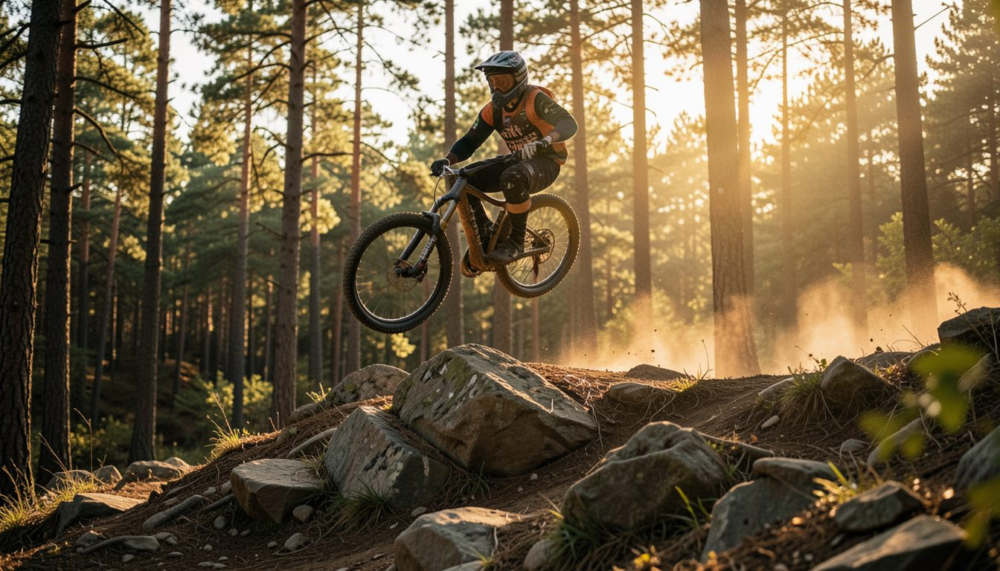
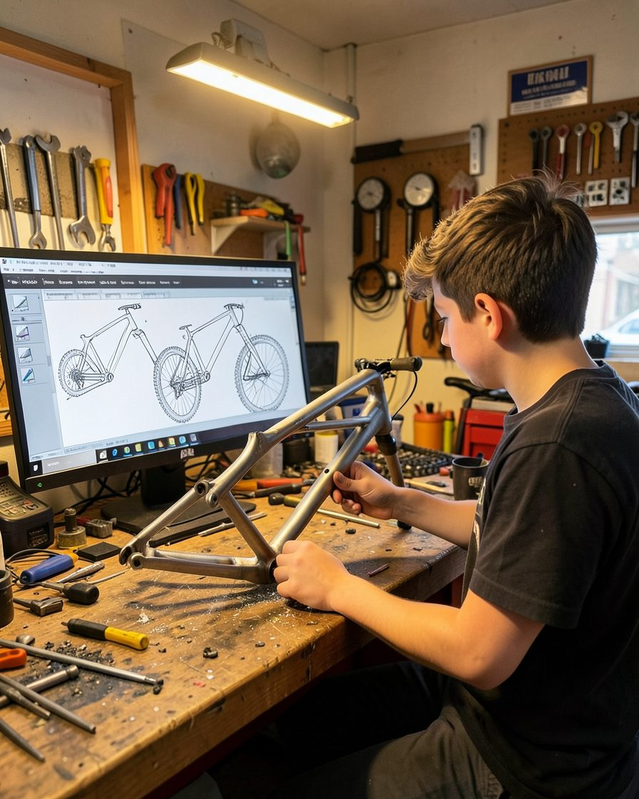

Visibilité
Votre logo sur le vélo, la tenue et chaque vidéo.

Saison 2026-2027
Un pilote de descente, un vélo conçu en bureau d'études, et l'objectif de la Coupe de France.
Le projet
Étudiant en BTS CPI en alternance, je conçois mon propre cadre de descente et je le teste en compétition.
Chaque course nourrit la conception : données, essais, améliorations.

Trois façons de gagner en visibilité.
Votre logo sur le vélo, la tenue et chaque vidéo.
Associez votre marque à un prototype conçu en bureau d'études.
Présence sur les Coupes de France et les courses régionales.
📍 La Grand-Combe (30)
Course régionale, première sortie du prototype.
📍 Lourdes (65)
📍 Les Gets (74)
« Un projet rare : un pilote qui conçoit son propre vélo. »
Écrivez-moi : je vous envoie le dossier de sponsoring complet.
Logo sur le vélo et la tenue, mentions dans les vidéos et sur Instagram.
📍Alès, Gard